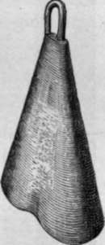
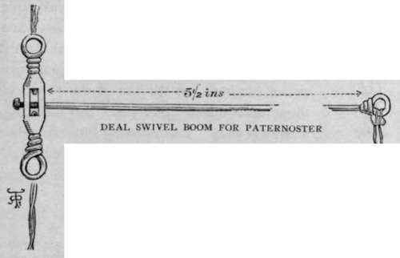
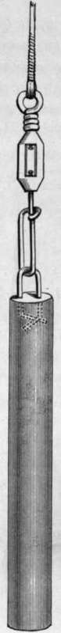
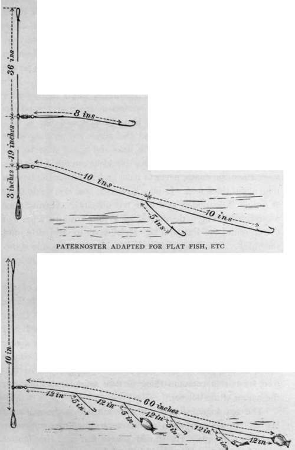
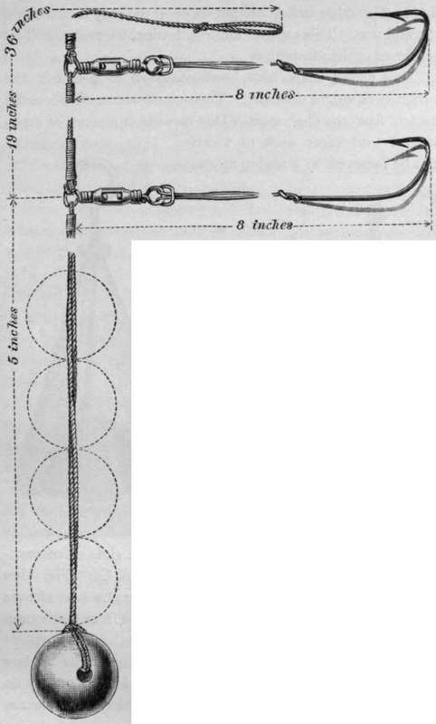
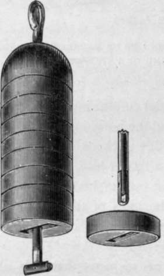
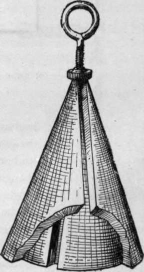

Sea Fishing From Small Boats. Part 6
Description
This section is from the book "Sea Fishing", by John Bickerdyke. Also available from Amazon: Sea Fishing.
Sea Fishing From Small Boats. Part 6
A simple and excellent weight can be made out of a piece of composition gas piping. The requisite length is cut off and filled with melted lead, a piece of brass wire as shown in the illustration being held in position. These leads, it will be noticed, are very much in the shape of a conical bullet, and sink rapidly to the bottom, which is a consideration when a strong tide is running. I have called them the ' Tracy ' lead, after their inventor. By using the swivel illustrated at the end of the paternoster these, and indeed other leads, can be changed with great ease. The following little table shows some useful sizes, with their approximate weights. The wire loop should err on the side of stoutness.
Flattened Cone Lead.
Light | ||
Diameter of Piping | Length | Weight |
3/8 in. | 2 in. | 2 OZ. |
3/8 in. | 3 1/2 in. | 3 oz. |
3/8 in. | 4 1/2 in. | 4 oz. |
Medium | ||
5/8 in | 4 1/2 in. | 8 oz. |
3/4 in. | 5 3/4 in. | 1 lb. |
Heavy | ||
1 in. | 6 in. | 2 lbs. |
1 in. | 7 1/4 in. | 2 1/2 lbs |
For fine fishing, where a light weight can be used, I rather prefer a more dumpy lead, which lies closer to the bottom and is barely visible to the fish.
To fill a piece of composition piping with lead seems a simple matter. I tried and found that the hot lead melted the pipe. I overcame this difficulty by standing the pipe in moist sand firmly pressed around it. The end of the pipe containing the wire should be stopped with putty and put downwards.
THE ' TRACY' LEAD, WITH SWIVEL ATTACHMENT TO PATERNOSTER.
I used to believe that for fishing on the bottom for flat fish the leger was the best form of tackle, but have long ago come to the conclusion that for such intervals of ten inches. Two I consider quite enough (see illustration).
The lowest hook link may be made three yards or even more in length, and bears half a dozen hooks, when it closely resembles what sailors call a trot, and I think we may call it a ' paternoster-trot.' It is a deadly tackle for sand dabs, plaice, and other flat purpose there is nothing so good as a modified form of paternoster. For flat fish the lowest hook link should be prolonged, and may bear two or even three hooks at fish. Whether the lowest hook link is short or long, it is not advisable to dispense with the second hook link above it, which secures any fish not feeding close to the bottom. I may say that often when angling for flat fish I have caught them on this top hook ; they feed off the bottom more often than people suppose.
PATERN OSTER-TROT.
These various forms of the paternoster will, I think, suffice to catch fish on or near the bottom in any water round our coasts. There is one point I have omitted, and that is, supposing the bottom is rocky and the weeds are growing some distance above it, then the hook links and hooks must be well up above the lead, and the angler should be careful, having once ascertained the depth, never to have his lead nearer the bottom than about three feet. It may be asked, how can we do this ? A simple little dodge gets over the difficulty. Having once ascertained the right depth, reel up a yard or so, tie a piece of cotton round the line, and be careful never to unwind beyond the mark. Of course, if the tide is rising or falling due allowance must be made; and if the fish appear to have suddenly ceased feeding, the depth should be again taken.
A useful arrangement for ascertaining the nature of the bottom is a sounding lead made much in the shape of the long cylinder illustrated. Its lower end is filled with tallow. Lower until it reaches the bottom, and on drawing it up you will find whether you are fishing over stones, mud, or sand ; it is a very useful guide to the fish which may be expected. Of course this is no new idea to men who know anything about navigation, for it is a common thing to take soundings to discover the nature of the bottom.
The sea angler should not stint himself in the matter of leads. He will want them of various weights, from one ounce up to two pounds. He should always fish with the lightest possible weight at the end of his line, changing it for a heavier lead as the tidal current increases. If, on the other hand, he is fishing with a heavy-lead and the tide slackens, then he should change it for a lighter lead, for the less the weight on the end of his line, the easier will he feel the bites of the fish and the quicker will he be able to strike and hook them.
Method Of Adding To Or Decreasing Weight At End Of Paternoster.
Sea leads are so heavy that it is obviously an advantage to have some arrangement to which, instead of changing the entire lead, additions may be made. One very simple method of doing this is to use from one to four or five large bullets with a considerable hole drilled through them, through which the line can easily be passed. The bullet at the end is fixed by simply passing the loop through the bullet and then the bullet through the projecting loop. The other bullets are put on or off the loop by removing the end one. This explanation will, I trust, be understood by reference to the illustration.
Two clever leads have been contrived to get over the variation of weight difficulty. Their construction is sufficiently evident from the illustration. One consists of a series of cone-shaped lead cases each of which can be removed by screwing up the nut and passing the central wire through the slot. The cone-shaped lead is made by Messrs. S. Allcock & Co. The other is sold by Mr. Hemens, the maker of the sea rod already described. The various sections are removed from the bottom by turning the end of the wire straight.
Hemens' Lead.
Allcock's Lead.
Continue to:
- prev: Sea Fishing From Small Boats. Part 5
- Table of Contents
- next: Sea Fishing From Small Boats. Part 7
Tags
fishing, hooks, bait, fishermen, spanish mackerel, mackerel fishing